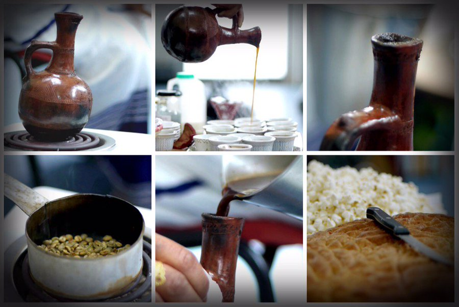
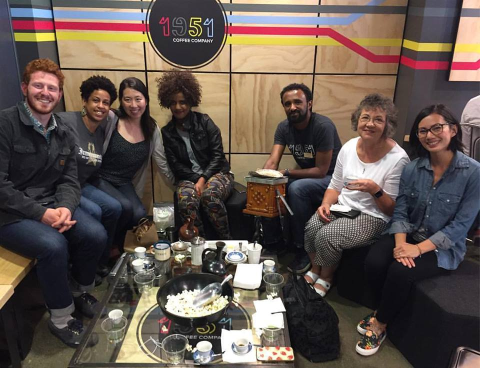
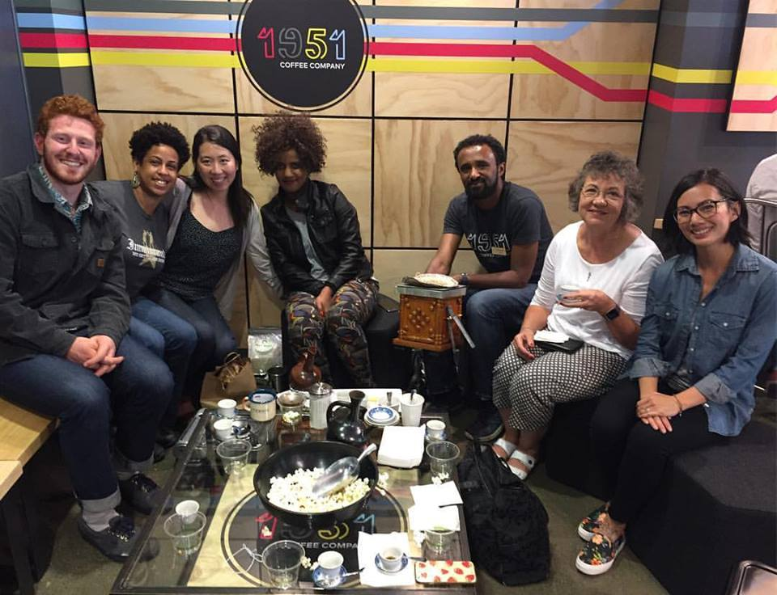
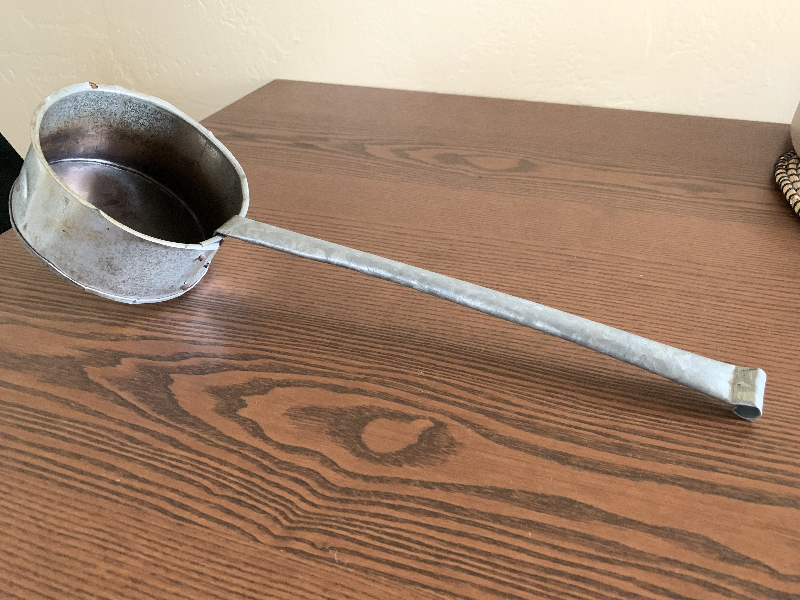

Eritrean Coffee
Hello, Welcome to my webpage!
My name is Mubarak and this is my hobby page where I like to share my love for coffee specifically for Eritrean coffee. I grew up in an East African family where coffee is a ritual that is widely used in family/friends gatherings, celebrations and chit chat. The whole process took about 2-3 hours in the old days since, but nowadays probably an hour. Coffee is made 1-3 times per day. Me and my wife do this once a day usually in the morning or afternoon. I enjoy the process as you get to witness and experience every thing from start to finish and of course enjoy a nice tasty aromatic cup of coffee in the end. The Eritrean coffee (Bune) preparation is very similar to the Ethiopian coffee (Buna).

 

Instructions
Here are the steps taken to prepare the coffee:
1) Wash the green coffee beans and then roast them in a small pan (Menkeshkesh).
2) When the beans are dark enough, the pot is hand around so that everyone can enjoy the aroma.
3) Then the beans are crushed in a mortar (Maukatebune) and sprinkled on a small mat (Meshrefet) with which the ground coffee is poured into the pot (Jebena) together with water as well as with spices like ginger (Jenjeble).
4) The coffee is boiled for about 30 mins, but should not boil over.
5) For coolin, the coffee is therefore poured 3-4 times into a small pot and back again in the pot (Jebena).
6) After the coffee is finished, it is poured into a small delicate Porcelain cups (Finjal) with some sugar or no sugar.
Tools



Most of the coffee tools mentioned above can be bought online (click here) or in most Eritrean/Ethiopian stores. You can replace most of the traditional tools with regular tools and still enjoy your coffee. If you want to see how to prepare the coffee with regular tools, click here.
Resources